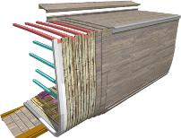
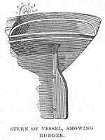
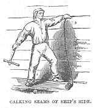
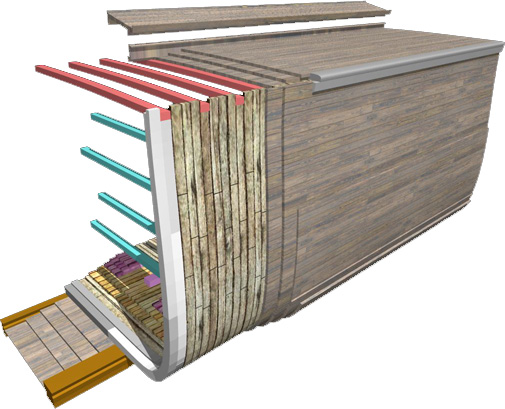
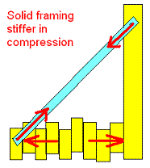
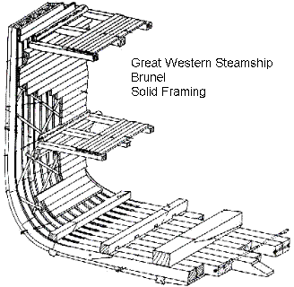
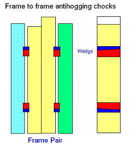
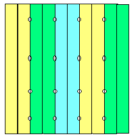
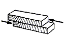

Noah's Ark is a very large wooden structure. There are a number of factors influencing the construction sequence;1. Minimize exposure to weathering
2. Maintain a safe structure at all times during construction
3. Ensure all lifting and assembly operations are feasible
4. Ensure fixing can be carried out - especially with regard to order of attachment
|
Building Sequence. Building Noah's Ark must have required some serious project management. Even large wooden ships were built as quickly as a few months, both for the sake of profit and to minimize weathering problems of the exposed structure. In wooden ship building, the order of construction is often dictated by the need for adequate access for driving fasteners. > See More here |
 |
Of the ships built in the 19th century, the general sequence of construction was "frame-first", apparently a later European invention. Ancient ship construction was predominantly "plank-first", where the planks served as the main structural members which were supported by the addition of internal frames. The ancient method was also used for the familiar Viking longboat, as well as the renowned ancient shipwrights of Greek and Rome. The large Mediterranean vessels were probably only feasible due to their advanced plank joining techniques.
In view of the differences between ancient and more recent practices, a hybrid construction is suggested. The framing in 19th century ships was usually joined in pairs with gaps between then of perhaps only a few inches. When Brunel constructed the wooden hulled Great Western steamship (as distinct from his later feat - the Great Eastern), he used solid framing.
Although the general sequence was well established, there was variation between ship builders. Design changes also directed the construction sequence. For example, the design decision to apply diagonal iron bracing to the inboard or outboard face of frames influences scheduling.
Here is a "typical" build sequence: Excerpt from R.M. Ballantyne2
The keel is the first part of a ship that is laid. It is the beam which runs along the bottom of a boat or ship from one end to the other. In large ships the keel consists of several pieces joined together. Its uses are, to cause the ship to preserve a direct course in its passage through the water; to check the leeway which every vessel has a tendency to make; and to moderate the rolling motion. The keel is also the ground-work, or foundation, on which the whole superstructure is reared, and is, therefore, immensely strong and solid. The best wood for keels is teak, as it is not liable to split.
Having laid the keel firmly on a bed of wooden blocks, in such a position that the ship when finished may slide into the water stern foremost, the shipbuilder proceeds next to erect the stem and stern posts.
(TL) This is certainly not always the case. Some photos of American clipper ships show construction commencing with the standing of midship frames and working towards the bow and stern.
The stem-post rises from the front end of the keel, not quite perpendicularly from it, but sloping a little outwards. It is formed of one or more pieces of wood, according to the size of the ship; but no matter how many pieces may be used, it is always a uniform single beam in appearance. To this the ends of the planks of the ship are afterwards fastened. Its outer edge is called the cut-water, and the part of the ship around it is named the bow.

The stern-post rises from the opposite end of the keel, and also slopes a little outwards. To it are fastened the ends of the planking and the framework of the stern part of the ship. To it also is attached that little but most important part of a vessel, the rudder. The rudder, or helm, is a small piece of timber extending along the back of the stern-post, and hung movably upon it by means of what may be called large iron hooks-and-eyes. By means of the rudder the mariner guides the ship in whatever direction he pleases. The contrast between the insignificant size of the rudder and its immense importance is very striking. Its power over the ship is thus referred to in Scripture,—“Behold also the ships, which, though they be so great, and are driven of fierce winds, yet are they turned about with a very small helm, whithersoever the governor listeth.” The rudder is moved from side to side by a huge handle or lever on deck, called the tiller; but as in large ships the rudder is difficult to move by so simple a contrivance, several ropes or chains and pulleys are attached to it, and connected with the drum of a wheel, at which the steersman stands. In the largest ships two, and in rough weather four men are often stationed at the wheel.
The ribs of the ship next rise to view. These are curved wooden beams, which rise on each side of the keel, and are bolted firmly to it. They serve the same purpose to a ship that bones do to the human frame—they support and give strength to it as well as form.
The planks follow the ribs. These are broad, and vary in thickness from two to four inches. (TL. Clippers were up to 6 inches) They form the outer skin of the ship, and are fastened to the ribs, keel, stem-post, and stern-post by means of innumerable pins of wood or iron, called tree-nails. The

spaces between the planks are caulked—that is, stuffed with oakum; which substance is simply the untwisted tow of old and tarry ropes. A figure-head of some ornamental kind having been placed on the top and front of the stem-post, just above the cutwater, and a flat, ornamental stern, with windows in it to light the cabin, the hull of our ship is complete. But the interior arrangements have yet to be described, although, of course, they have been progressing at the same time with the rest.(TL) According to Crothers 1, the application of frame chocks was done from the inside. This dictates that the planking ceiling must have been fixed to the outside in order to prevent the chocks driving apart the gaps between frames.
The beams of a ship are massive wooden timbers, which extend across from side to side in a series of tiers. They serve the purpose of binding the sides together, of preventing them from collapsing, and of supporting the decks, as well as of giving compactness and great strength to the whole structure.
The decks are simply plank floors nailed to the beams, and serve very much the same purposes as the floors of a house. They also help to strengthen the ship longitudinally. All ships have at least one complete deck; most have two, with a half-deck at the, stern, called the quarter-deck, and another at the bow, called the forecastle. But the decks of large ships are still more numerous. Those of a first-rate man-of-war are as follows—we begin with the lowest, which is considerably under the surface of the sea:—

Layered planking applied after ceiling and decks. So external planking operation would coincide with internal fitout - cages etc.
Planking is laid horizontally in up to four layers, with the triple keel providing stability without the need for supports. Since solid framing (with pitch coating) would be weather-tight, the ceiling (internal lining) can be completed first prior to external planking. The frames can then be made shear resisting by drilling and fitting hardwood trunnels (treenails, or dowels) in the same operation as plank trunnelling. Same tools, same access.
The larger wooden ships had surprisingly narrow gaps between frames, even as little as a few inches. This meant it was possible to drive wooden chocks between the frames in an attempt to counter hogging. However, by adding around 30% more frames a solid structure could be formed. This would improve resistance to hogging and sagging loads.

Brunel's solid-framed Great Western - Illustration from Denis Griffiths. A long bolt can be see thru floors, but no indication of how he attached adjacent frame pairs. Considering the admiralty system (inboard) iron bracing, Brunel may have used solid framing for the rigidity in compression when brace is in tension. Otherwise the frames are only kept apart by the planks and ceiling - indirectly though trunnels and bolts.

Image Denis Griffiths
Frame 'chocks'
ABS shear force is quite high, http://www.worldwideflood.com/ark/hull_calcs/wave_bm1.htm and difficult to absorb with trunnels - so here is a modification of the frame chock system which was used prior to the introduction of iron bracing. The chocks are let in to frames and wedged vertically. This method reduces interference with plank trunnels.
Now, that's quite a lot of shear ... 13247 kNm. To transfer all the shear between frames is too much with trunnels alone, requiring something like 100 trunnels per frame (which completely ignores ceiling and planking contribution, and the effect of friction). A much higher shear capacity would be achieved with chocks let into the frame and wedged vertically to drive against shoulder of frame socket. (Maybe 1.5 inches deep or so). Need about 10 per side and you'd be pretty much up to the shear force. Hammering 100 huge trunnels to pin adjacent frames might be a daunting task - not to mention the trunnel hole interferences with holes for planking, ceiling, knees and adjacent frames... At least this way is not much different and logically superior to a known system, and could be fitted the same way (late in the construction).
Fitting of chocks: (Donald McKay spec) Crothers p149: "Chocks 5" thick between frames at every butt, driven from the inside to within 2" of the planking...". (allowing air gap obviously). Driven from inside then this is prior to ceiling, but planking is already in place.

The frame chocks might be better as trunnels since this is much easier to fit, and the hole can be drilled after the frames are fitted together without any need to perfectly match the mating rebates. It would be less efficient and tend to open the frame-to-frame joint under shear, but this should be acceptable considering the substantial planking and ceiling. Another advantage is that the frame chocks by treenails is almost the same operation as the treenails used in planking - and done at the same time, from the outside of the hull. These frame trunnel are completely hidden under planking so do not need to resists water pressure.

Trunnels fitted between frames to resist shear
Trunnels adding shear resistance to adjacent frame pairs fitted just prior to external planking. This is in addition to trunnels that were driven longitudinally as the frames were erected. The principal is equivalent to the treenailed scarph joint, where the treenails absorb most of the shear load while the bolts simply hold the join together.
Treenailed scarf joint.
In this case the dowels are working in rolling shear, which is one of the lowest strengths. However the large surface area and the higher strength of the dowel more than counters this.

Rolling Shear http://www.worldwideflood.com/ark/basic_hull_design/joining_big_logs.htm
1. Crothers, William L., The American-Built Clipper Ship 1850-1856. Characteristics, Construction, Details, International Marine - McGraw Hill, 1997. Frame chocks driven from inside; see note on Figure 9.6 p 154. "Hardwood chocks 5" thick above and below every butt to prevent hogging, Driven normal to framing from inside to within 2" of planking. Crother makes mention of the limited effectiveness of frame chock to counter hogging, however, the suggested Ark design is not only relying on chock friction. Return to text
2. Excerpt from R.M. Ballantyne “Man on the Ocean” 1863, ChVIII. Scanned by Athelstane E-Books (1997 to 2004); http://www.athelstane.co.uk/ballanty/manocean/ocean08.htm. Copyright claimed by Athelstane; http://www.athelstane.co.uk/copyrite.htm Return to text